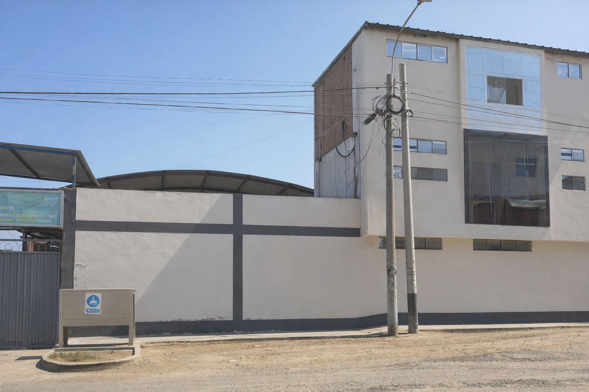

Comprometidos con la Educación en Barranca
La Unidad de Gestión Educativa Local N° 16 es una instancia de ejecución descentralizada del Gobierno Regional de Lima, con autonomía en el ámbito de su jurisdicción.
Nuestra labor principal es fortalecer las capacidades de gestión pedagógica y administrativa de las instituciones educativas bajo nuestra jurisdicción, promoviendo una educación de calidad, con equidad y valores.
Misión
Garantizar un servicio educativo de calidad en todos los niveles y modalidades, fortaleciendo la gestión de las instituciones educativas y promoviendo el desarrollo integral del estudiante.
Visión
Ser una institución líder y referente en gestión educativa, reconocida por su eficiencia, transparencia y el alto nivel de logro de aprendizaje de sus estudiantes en la provincia de Barranca.
Valores que nos Definen
Integridad
Actuamos con rectitud, honestidad y transparencia en cada decisión administrativa y pedagógica.
Compromiso
Nos dedicamos plenamente a la mejora continua de la educación en toda la provincia de Barranca.
Excelencia
Buscamos los más altos estándares de calidad en el servicio que brindamos a nuestros docentes y alumnos.
Vocación de Servicio
Nuestra prioridad es atender con calidez y eficiencia las necesidades de nuestra comunidad educativa.
Hitos Importantes
Fundación de la UGEL 16
Se establece la Unidad de Gestión Educativa Local N° 16 en la provincia de Barranca para descentralizar la educación administrativa.
Nueva Sede Institucional
Inauguración de las oficinas administrativas modernas en la Av. Ferrocarril para mejorar la atención al docente.
Transformación Digital
Implementación de la Mesa de Partes Virtual y digitalización de procesos de escalafón debido a la emergencia sanitaria.
Modernización del Portal
Lanzamiento de la nueva plataforma web institucional interactiva para toda la comunidad barranquina.